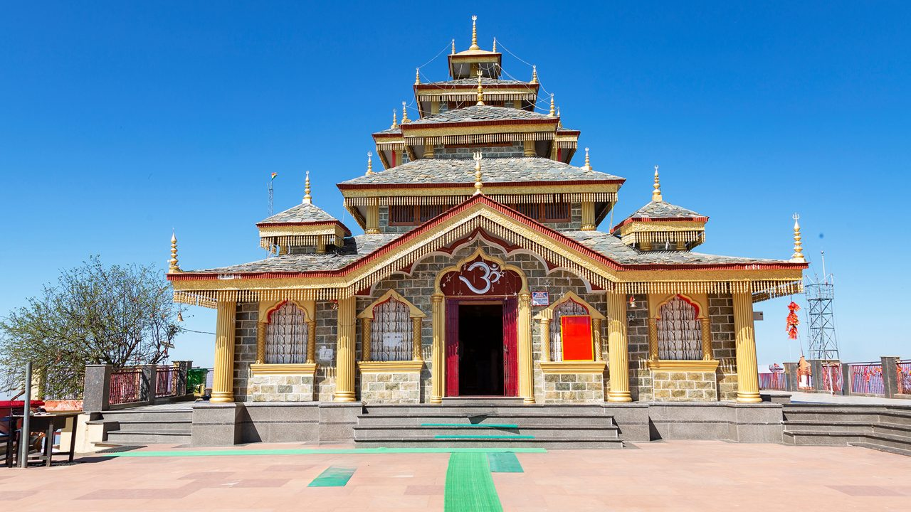
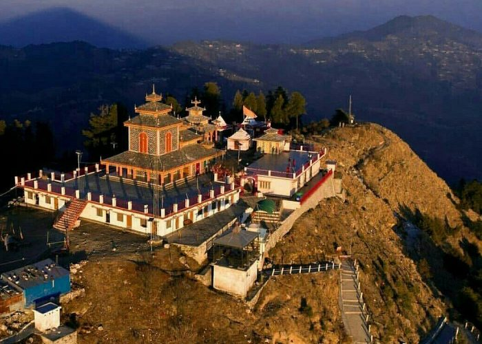
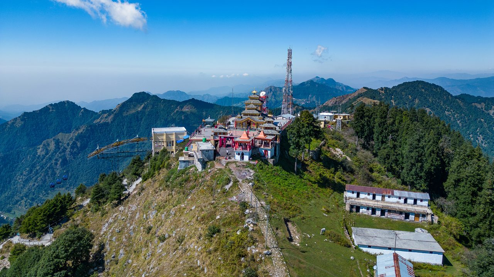
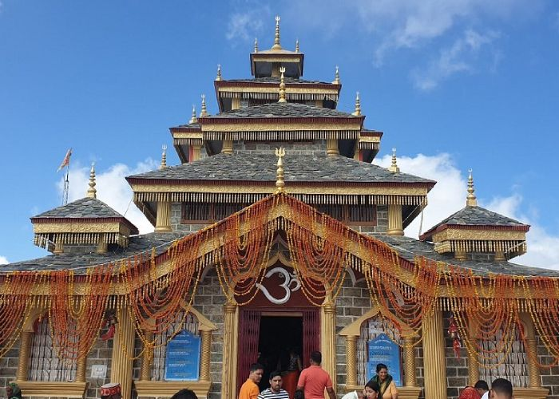
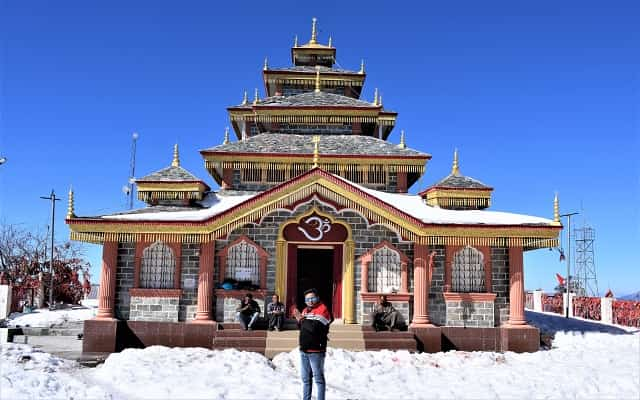
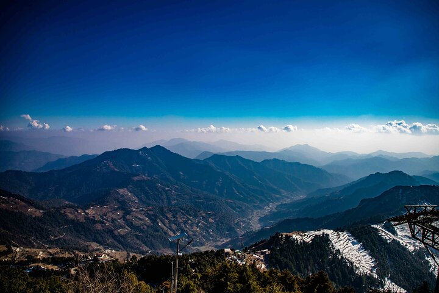

Surkanda Devi Temple, perched at an altitude of around 2,757 meters in the Tehri Garhwal region of Uttarakhand, is one of the most revered Shakti Peeths in India. Surrounded by dense forests and towering Himalayan peaks, this sacred temple offers not just spiritual fulfillment but also a breathtaking journey through nature. According to mythology, it is believed that the head of Goddess Sati fell at this very place, making it a site of immense divine power and श्रद्धा. The temple stands high above the clouds, where faith meets the sky and every step towards it feels like a path to the divine.
The trek to Surkanda Devi, starting from Kaddukhal, is a short yet rewarding climb of around 2 kilometers through lush forests and scenic trails. As you ascend, panoramic views of the Himalayas begin to unfold, revealing snow-covered peaks and deep valleys below. At the summit, the 360-degree view is nothing short of magical — especially during sunrise and sunset. During winters, the temple transforms into a snowy paradise, attracting both devotees and adventure lovers. Festivals like Ganga Dussehra bring vibrant energy, with devotees gathering to seek blessings and experience the spiritual aura of this divine peak.
April to June offers pleasant weather and clear trekking conditions; September to November provides crystal-clear Himalayan views. December to February is perfect for snow lovers, turning the temple into a magical white landscape. Avoid monsoon (July–August) due to slippery trails and heavy rainfall.
Sacred Surkanda Devi Temple, 2 km scenic trek from Kaddukhal, panoramic 360° Himalayan views, snowfall experience in winters, Ganga Dussehra festival celebrations, and peaceful forest trails — perfect for trekking, photography, and spiritual connection.
Wear comfortable trekking shoes, carry water and light snacks, start early morning for a peaceful trek and clear views, carry warm clothes even in summer, and be cautious during winters due to snow and slippery paths. Respect the sanctity of the temple and keep the surroundings clean.
"High above the valleys, where clouds bow to the mountains and silence echoes devotion, Surkanda Devi stands as a beacon of divine शक्ति — a place where every step of the climb purifies the soul and every दर्शन feels like a blessing from the heavens."